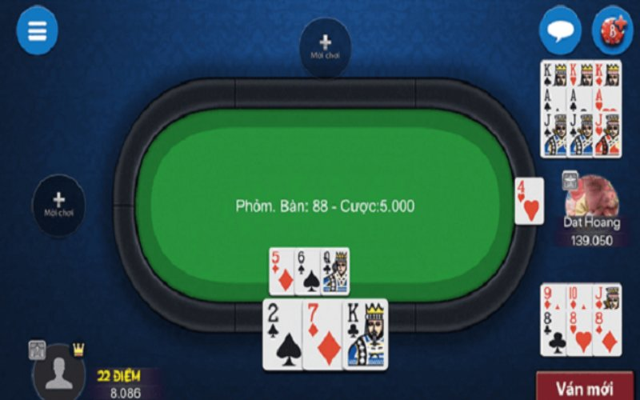

<!DOCTYPE html>
<html >
  <head>
    <meta charset="UTF-8" />
    <meta name="viewport" content="width=device-width, initial-scale=1.0" />
    <title>V6BET - Trang chủ chính thức V6bet.live đăng ký nhận 100K</title>
    <meta
      name="description"
      content="V6BET hay nhà cái V6BET là tên gọi chung của nhà cái game bài trực tuyến uy tín và được người chơi ưa chuộng nhất hiện nay. Dựa trên nền tảng cá cược hiện"
    />
    <meta
      name="keywords"
      content=" Nhà cái cá cược hàng đầu tại Việt Nam :Casino online, Nổ hũ ,Tài xỉu, Xóc đĩa, Xổ số, Thể thao, Bắn cá, Đá gà"
    />
    <link rel="icon" href="./assets/images/h5icon.ico" sizes="60x60" />

    <link
      rel="stylesheet"
      href="https://cdn.jsdelivr.net/npm/swiper@11/swiper-bundle.min.css"
    />
    <script src="https://cdn.jsdelivr.net/npm/swiper@11/swiper-bundle.min.js"></script>

    <link
      rel="stylesheet"
      href="https://cdnjs.cloudflare.com/ajax/libs/remixicon/3.5.0/remixicon.css"
      integrity="sha512-HXXR0l2yMwHDrDyxJbrMD9eLvPe3z3qL3PPeozNTsiHJEENxx8DH2CxmV05iwG0dwoz5n4gQZQyYLUNt1Wdgfg=="
      crossorigin="anonymous"
      referrerpolicy="no-referrer"
    />

    <script src="assets/jquery-3.7.1.min.js"></script>
    <link rel="stylesheet" href="./assets/index.css" />
    <script src="assets/tailwind.js"></script>
  </head>
  <body>
    <div
      id="showloading"
      class="h-screen w-full left-0 bg-[#adadadbe] top-0 fixed duration-1000 z-50"
    >
      <div class="space-x-2 justify-center flex items-center mt-[20%]">
        <div
          class="h-8 w-8 bg-black rounded-full animate-bounce [animation-delay:0s]"
        ></div>
        <div
          class="h-8 w-8 bg-black rounded-full animate-bounce [animation-delay:-0.3s]"
        ></div>
        <div class="h-8 w-8 bg-black rounded-full animate-bounce"></div>
      </div>
    </div>

    <div class="" id="side-bar"></div>
    <header class="bg-[#ffffffd5] shadow-lg" id="header"></header>

    <main>
      <div class="container max-w-screen-xl mx-auto *:my-5 *:md:my-10">
        <div class="grid grid-cols-12 gap-5 md:gap-20">
          <div class="col-span-12 lg:col-span-9">
            <div class="content *:my-5" id="content_left">
              <h6 class="text-red-600 text-xl font-bold text-center" id="h6"></h6>
              <h3 class="text-red-600 text-5xl font-bold text-center" id="tittle"></h3>
              <div class="flex justify-center">
                <hr class="border-t-[3px] w-[30px] border-red-600" />
              </div>

             
            </div>
          </div>
          <div class="col-span-12 lg:col-span-3" id="content_right"></div>
        </div>
      </div>
    </main>

    <footer id="footer" class="bg-[#474747]"></footer>
    <div id="backtotop"></div>
    <div id="hongbao0" class="hb-wrapper" style="display: block"></div>

    <script>
      var active = "";
      function getQueryParams() {
        const params = {};
        const queryString = window.location.search.substring(1);
        const regex = /([^&=]+)=([^&]*)/g;
        let match;
        while ((match = regex.exec(queryString))) {
          params[decodeURIComponent(match[1])] = decodeURIComponent(match[2]);
        }
        return params;
      }
      const params = getQueryParams();
      const id = Number(params.id);
      const items_detail_main_left = [
        {
            id: 1,
            h6: `GAME BÀI`,
            h3: `Giới thiệu về Game Bài Mậu Binh tại V6bet`,
            text: `<p><strong><a href="./index.html">V6bet</a></strong> là một trong những sòng bạc trực tuyến hàng đầu hiện nay với hệ thống game đa dạng và đẳng cấp. Trong đó, game bài <strong><a href="./index.html">Mậu Binh</a></strong> (hay còn được gọi là Binh Xập Xám) là một trong những trò chơi được yêu thích và có số lượng người chơi đông đảo. Vậy tại sao game bài Mậu Binh lại thu hút được sự quan tâm của đa số người chơi? Điều đó sẽ được giải đáp trong bài viết này.</p>
<h2>Luật Chơi Mậu Binh tại V6bet</h2>
<p>Trước khi đi vào chi tiết về cách chơi và các chiến thuật để thắng lớn trong game bài Mậu Binh tại V6bet, chúng ta cùng tìm hiểu luật chơi của trò chơi này trên nền tảng này.</p>
<figure>
<figcaption>Luật Chơi Mậu Binh tại V6bet</figcaption>
</figure>
<h3>Cách xếp bài trong Mậu Binh</h3>
<p>Mậu Binh là một trò chơi đánh bài dễ chơi nhưng lại rất hấp dẫn do tính chất đối đầu giữa người chơi. Trong trò chơi này, mỗi người chơi sẽ được chia 13 lá bài và người có bộ bài lớn nhất sẽ chiến thắng.</p>
<p>Đầu tiên, chúng ta cùng tìm hiểu về các loại bài trong game Mậu Binh:</p>
<p></p>
<ul>
<li>Sám cô (3 đôi thông): gồm 3 đôi cùng số.</li>
<li>Tứ quý (4 đôi thông): gồm 4 đôi cùng số.</li>
<li>Thùng phá sảnh (5 lá liên tiếp cùng chất): gồm 5 lá bài liên tiếp và cùng chất.</li>
<li>Phỏm (3 lá bài cùng số và khác chất): gồm 3 lá bài cùng số và khác chất.</li>
<li>Xám chiếu (2 lá bài cùng số và khác chất): gồm 2 lá bài cùng số và khác chất.</li>
<li>Đôi: gồm 2 lá bài cùng số.</li>
<li>Lẻ: là những lá bài không thuộc bất kỳ loại bài nào trên.</li>
</ul>
<p>Theo đó, để xếp bài trong Mậu Binh, người chơi cần sắp xếp bài sao cho có bộ bài lớn nhất theo thứ tự từ cao đến thấp như sau:</p>
<ol>
<li>Sám cô</li>
<li>Tứ quý</li>
<li>Thùng phá sảnh</li>
<li>Phỏm</li>
<li>Xám chiếu</li>
<li>Đôi</li>
<li>Lẻ</li>
</ol>
<p>Nếu trường hợp hai người chơi có bộ bài tương đương, thì bộ bài lớn hơn theo quy tắc:</p>
<ul>
<li>Thùng phá sảnh: so sánh bằng cách tính tổng các con bài.</li>
<li>Phỏm: so sánh bằng cách tính tổng các con bài.</li>
<li>Sám cô và tứ quý: so sánh bằng cách so sánh điểm của 2 con bài cùng số lớn nhất trong bộ bài.</li>
<li>Xám chiếu: so sánh bằng cách so sánh điểm của 2 con bài cùng số lớn nhất trong bộ bài.</li>
</ul>
<h3>Quân bài đặc biệt trong Mậu Binh</h3>
<p>Trong game bài Mậu Binh tại V6bet, có một số quân bài đặc biệt có tính năng đổi chỗ với bất kỳ lá bài nào khác, giúp người chơi có thể xếp bài tối ưu hơn. Đây là điểm khác biệt của game bài Mậu Binh tại V6bet so với game bài truyền thống.</p>
<p>Các quân bài đặc biệt này bao gồm:</p>
<ul>
<li>Cái Ba (3♣): có thể đổi chỗ với bất kỳ lá bài nào để tạo thành Sám cô hoặc Tứ quý.</li>
<li>Ông Hai (2♥): có thể đổi chỗ với bất kỳ lá bài nào để tạo thành Thùng phá sảnh.</li>
<li>Ông Mười (10♦): có thể đổi chỗ với bất kỳ lá bài nào để tạo thành Phỏm.</li>
</ul>
<p>Với tính năng này, người chơi có thể tự do xếp bài và thay đổi bộ bài theo ý muốn để có cơ hội chiến thắng cao hơn.</p>
<h2>Cách chơi Mậu Binh hiệu quả trên V6bet</h2>
<p>Sau khi đã hiểu rõ luật chơi và quân bài đặc biệt trong game Mậu Binh tại V6bet, chúng ta cùng đi vào chi tiết về cách chơi hiệu quả trên nền tảng này.</p>
<figure>
<figcaption>Cách chơi Mậu Binh hiệu quả trên V6bet</figcaption>
</figure>
<h3>Tìm hiểu người chơi khác</h3>
<p>Trong game Mậu Binh, một yếu tố quan trọng để chiến thắng là phải hiểu rõ cách chơi của đối thủ. Hãy quan sát và ghi nhận lại các bộ bài mà người chơi khác đã đánh để dự đoán được bộ bài của họ. Ngoài ra, nên lưu ý xem xét các quân bài đặc biệt mà đối thủ đã sử dụng và cách họ sắp xếp bài.</p>
<h3>Theo dõi quân bài của mình</h3>
<p>Để có thể đánh bại được đối thủ, bạn cần phải biết rõ bộ bài của mình và có những chiến thuật phù hợp. Hãy lưu ý giữ các quân bài đặc biệt để sử dụng vào lúc cần thiết và tối ưu hóa bộ bài của mình để có thể thắng lớn.</p>
<blockquote>
<p>Xem thêm: Giới thiệu về <strong><a href="">game Bài Phỏm</a></strong> tại V6bet</p>
</blockquote>
<h3>Tính toán điểm số</h3>
<p>Điểm số là yếu tố quan trọng trong game Mậu Binh. Nên tính toán kỹ lưỡng các con bài trong tay và xác định được bộ bài lớn nhất có thể tạo thành để có cơ hội chiến thắng cao hơn.</p>
<h2>Các chiến thuật chơi Mậu Binh thắng lớn</h2>
<p>Để có thể thắng lớn trong game bài Mậu Binh tại V6bet, người chơi cần có những chiến thuật phù hợp và linh hoạt.</p>
<figure>
<figcaption>Các chiến thuật chơi Mậu Binh thắng lớn</figcaption>
</figure>
<h3>Chiến thuật gấp ba</h3>
<p>Chiến thuật này được sử dụng khi người chơi có tổ hợp bài ở dạng Sám cô hoặc Tứ quý. Nếu người chơi đã xếp được tổ hợp 3 đôi thông (Sám cô), hãy sử dụng quân Cái Ba để đổi chỗ với quân bài nào đó trong tay và tạo thành Tứ quý. Khi đó, bạn sẽ có tổ hợp Tứ quý kết hợp với Thùng phá sảnh hoặc Phỏm để thắng lớn.</p>
<h3>Chiến thuật nhân đôi</h3>
<p>Chiến thuật này cũng được sử dụng khi có tổ hợp ở dạng Sám cô hoặc Tứ quý. Nếu người chơi có quân Cái Ba hoặc Ông Hai, hãy sử dụng để đổi chỗ với một lá bài lẻ khác, tạo thành Thùng phá sảnh hoặc Phỏm. Khi đó, bạn sẽ có tổ hợp bài đủ mạnh để thắng lớn.</p>
<h3>Chiến thuật bao quát</h3>
<p>Như đã đề cập, tính chất đối đầu giữa người chơi là yếu tố quan trọng trong game Mậu Binh. Vì vậy, chiến thuật bao quát là một trong những chiến thuật hiệu quả để đánh bại đối thủ. Để áp dụng chiến thuật này, người chơi cần xếp bài sao cho có thể chiến thắng bất kỳ ai trong các ván sau, bằng cách tối ưu hóa bộ bài và sử dụng quân bài đặc biệt một cách linh hoạt.</p>
<h2>Ưu điểm khi chơi Mậu Binh tại V6bet</h2>
<p>Không chỉ là một trò chơi đơn giản, game bài Mậu Binh tại V6bet còn có những ưu điểm vượt trội khiến người chơi không thể bỏ qua.</p>
<figure>
<figcaption>Ưu điểm khi chơi Mậu Binh tại V6bet</figcaption>
</figure>
<h3>Đa dạng và phong phú</h3>
<p>Với hệ thống game đa dạng và phong phú của V6bet, người chơi có thể thoả sức lựa chọn các loại game bài khác nhau. Ngoài Mậu Binh, còn có rất nhiều trò chơi hấp dẫn như Tiến Lên Miền Nam, Phỏm, Tá Lả, Xì Tố, Poker, Baccarat và nhiều trò chơi khác.</p>
<h3>Thưởng đăng ký và khuyến mãi hấp dẫn</h3>
<p>Khi đăng ký tài khoản mới tại V6bet, người chơi sẽ được nhận ngay khoản tiền thưởng đăng ký và còn có thể nhận được nhiều khuyến mãi hấp dẫn khác trong quá trình chơi game.</p>
<h3>An toàn và bảo mật thông tin</h3>
<p>V6bet cam kết bảo mật thông tin và đảm bảo tính an toàn cho người chơi trong quá trình giao dịch và chơi game bài. Với hệ thống bảo mật tiên tiến và đội ngũ nhân viên chuyên nghiệp, V6bet luôn là sự lựa chọn tin cậy của người chơi.</p>
<h2>Kết luận</h2>
<p>Game bài Mậu Binh tại V6bet không chỉ là trò chơi giải trí mà còn là một cách để các bạn thể hiện khả năng chiến thuật và tính toán. Hãy thử chơi và trải nghiệm ngay để có những giây phút thư giãn và thử thách bản thân. Hãy luôn nhớ áp dụng những chiến thuật và ưu điểm khi chơi Mậu Binh trên nền tảng này để có cơ hội thắng lớn và trở thành nhà vô địch trong trò chơi này. Chúc các bạn chơi game vui vẻ và may mắn!</p>`,
        },
        {
            id: 2,
            h6: `GAME BÀI`,
            h3: `Giới thiệu về game Bài Phỏm tại V6bet`,
            text: `<p><a href="./index.html"><strong>Game bài phỏm</strong></a> là một trong những trò chơi đánh bài truyền thống được yêu thích và phổ biến ở Việt Nam. Đây là một trò chơi rất thú vị và hấp dẫn, không chỉ là sự kết hợp giữa may mắn và kỹ năng mà còn là cách để các người chơi thư giãn sau những giờ làm việc căng thẳng.</p>
<p>Với sự phát triển của công nghệ, hiện nay game Bài Phỏm đã có mặt trên nhiều nền tảng trực tuyến, trong đó có V6bet – một trong những nhà cái uy tín và được yêu thích nhất tại Việt Nam. Trong bài viết này, chúng ta sẽ cùng tìm hiểu về game Bài Phỏm tại V6bet và cách chơi hiệu quả nhất.</p>
<h2>Luật chơi game Bài Phỏm cơ bản</h2>
<figure id="attachment_141" class="wp-caption aligncenter">
<figcaption id="caption-attachment-141" class="wp-caption-text">Luật chơi game Bài Phỏm cơ bản</figcaption>
</figure>
<p>Trước khi bàn về cách chơi Bài Phỏm trên <strong><a href="./index.html">V6bet</a></strong>, chúng ta hãy cùng nhau tìm hiểu về luật chơi cơ bản của trò chơi này. Bài Phỏm được chơi bởi 4 người với 52 lá bài và mỗi người sẽ được chia 13 lá bài. Mục đích của trò chơi là để có được số điểm thấp nhất bằng cách sắp xếp các lá bài trong tay thành những bộ phỏm hoặc tứ quý.</p>
<p>Các lá bài trong Bài Phỏm được đánh giá theo thứ tự từ cao đến thấp: Át, K, Q, J, 10, 9, 8, 7, 6, 5, 4, 3, 2. Điểm số của mỗi lá bài được tính bằng giá trị của nó, ngoại trừ Át có giá trị 1 điểm và các lá bài gồm 10, K, Q, J có giá trị 10 điểm. Nếu có 2 người có cùng số điểm thấp nhất, thì người có lá bài kết hợp thấp hơn sẽ là người chiến thắng.</p>
<h2>Các biến thể của game Bài Phỏm tại V6bet</h2>
<figure id="attachment_142" class="wp-caption aligncenter">
<figcaption id="caption-attachment-142" class="wp-caption-text">Các biến thể của game Bài Phỏm tại V6bet</figcaption>
</figure>
<p>Trên V6bet, người chơi có thể trải nghiệm nhiều biến thể của game Bài Phỏm, đảm bảo sẽ mang đến cho bạn những giờ phút giải trí thú vị. Dưới đây là 3 biến thể phổ biến của Bài Phỏm tại V6bet:</p>
<h3>Bài Phỏm truyền thống</h3>
<p>Đây là phiên bản cơ bản và phổ biến nhất của Bài Phỏm tại V6bet. Các người chơi sẽ được chia 13 lá bài và cố gắng sắp xếp thành các bộ phỏm hoặc tứ quý để có số điểm thấp nhất. Trò chơi kết thúc khi một người chơi hết bài hoặc khi số lượt đánh đã đạt tới giới hạn.</p>
<h3>Bài Phỏm chia bài</h3>
<p>Trong biến thể này, người chơi sẽ không chia bài cho nhau mà sẽ do máy tính chia bài. Điều này sẽ mang lại sự công bằng và thuận tiện cho các người chơi.</p>
<h3>Bài Phỏm đánh bài</h3>
<p>Điểm khác biệt của biến thể này là người chơi có thể đánh bài liên tục vào bất kỳ lúc nào trong vòng chơi. Điều này sẽ tạo ra sự hấp dẫn và thử thách cho người chơi bởi họ cần phải suy nghĩ và tính toán kỹ lưỡng trước khi đánh bài.</p>
<h2>Hướng dẫn chơi Bài Phỏm hiệu quả trên V6bet</h2>
<figure id="attachment_140" class="wp-caption aligncenter">
<figcaption id="caption-attachment-140" class="wp-caption-text">Hướng dẫn chơi Bài Phỏm hiệu quả trên V6bet</figcaption>
</figure>
<p>Sau khi đã hiểu về luật chơi và các biến thể của Bài Phỏm trên V6bet, bây giờ chúng ta sẽ cùng tìm hiểu về cách chơi Bài Phỏm hiệu quả nhất.</p>
<h3>Tìm hiểu chiến thuật chơi Bài Phỏm</h3>
<p>Không giống như các trò chơi đánh bài khác, Bài Phỏm không chỉ đơn thuần là cần may mắn mà còn cần kỹ năng và chiến thuật trong việc xếp bài. Trên V6bet, bạn có thể tìm hiểu các chiến thuật chơi Bài Phỏm từ các người chơi giàu kinh nghiệm hoặc từ các trang web hướng dẫn chơi game.</p>
<p>Một chiến thuật nổi tiếng trong Bài Phỏm là “chặt lá”. Điều này có nghĩa là khi bạn có bộ phỏm hoặc tứ quý có điểm số thấp, bạn có thể cố gắng sử dụng các lá bài có giá trị cao để “chặt” lá bài của đối thủ. Tuy nhiên, hãy cẩn thận và tính toán kỹ lưỡng trước khi “chặt” vì đối thủ có thể có bộ phỏm hoặc tứ quý cao hơn và khiến bạn bị “đập”.</p>
<h3>Nắm rõ các biến thể của game</h3>
<p>Như đã đề cập ở trên, trên V6bet có nhiều biến thể của game Bài Phỏm. Do đó, để chơi hiệu quả, bạn cần nắm rõ luật chơi và các chiến thuật phù hợp cho từng biến thể. Hãy thử trải nghiệm và tìm hiểu các biến thể này để trở thành một người chơi Bài Phỏm thông thái trên V6bet.</p>
<h3>Tự tin và kiên nhẫn</h3>
<p>Điều quan trọng không chỉ trong Bài Phỏm mà còn trong bất kỳ trò chơi nào là tự tin và kiên nhẫn. Hãy tin vào khả năng của bản thân và đừng vội vàng khi chơi Bài Phỏm. Đôi khi việc đợi và tính toán kỹ lưỡng sẽ giúp bạn chiến thắng hơn là cố gắng đánh bài liên tục.</p>
<h2>Ưu đãi và khuyến mãi cho người chơi Bài Phỏm tại V6bet</h2>
<figure id="attachment_139" class="wp-caption aligncenter">
<figcaption id="caption-attachment-139" class="wp-caption-text">Ưu đãi và khuyến mãi cho người chơi Bài Phỏm tại V6bet</figcaption>
</figure>
<p>Một điều đặc biệt khi chơi game Bài Phỏm tại V6bet là bạn sẽ được thưởng thức những ưu đãi và khuyến mãi hấp dẫn. Với mục tiêu tạo ra trải nghiệm chơi game tốt nhất cho người dùng, V6bet luôn cập nhật các chương trình khuyến mãi mới và hấp dẫn để thu hút người chơi.</p>
<p>Ví dụ, hiện tại V6bet đang có chương trình khuyến mãi “Tăng thưởng lên đến 300%” dành cho người chơi Bài Phỏm. Đơn giản chỉ cần tham gia và hoàn thành mục tiêu chơi Bài Phỏm, bạn sẽ có cơ hội nhận được phần thưởng lớn từ V6bet. Ngoài ra, hàng tuần V6bet còn có các chương trình khuyến mãi đặc biệt dành cho người chơi Bài Phỏm, hãy theo dõi và không bỏ lỡ cơ hội nhận thưởng tại V6bet nhé!</p>
<h2>Kết luận: Trải nghiệm game Bài Phỏm hấp dẫn tại V6bet</h2>
<p>Với những thông tin và chiến thuật chơi Bài Phỏm v6bet trên đây, hy vọng bạn đã có thêm nhiều kiến thức và kinh nghiệm trong việc chơi trò chơi này trên V6bet. Đồng thời, đừng quên tham gia và trải nghiệm các biến thể của game Bài Phỏm tại V6bet để có những giờ phút giải trí thú vị và cơ hội nhận được các phần thưởng hấp dẫn từ nhà cái uy tín này. Chúc bạn may mắn và thành công trong cuộc chơi!</p>`,
        },
        {
            id: 3,
            h6: `GAME BÀI`,
            h3: `Giới thiệu game bài Tiến lên miền Nam trên V6bet`,
            text: `<p>Game bài <a href=""><strong>Tiến lên miền Nam</strong></a> là một trong những trò chơi bài phổ biến và được yêu thích nhất tại Việt Nam. Với sự phát triển của công nghệ, hiện nay game bài Tiến lên miền Nam cũng đã có mặt trên nhiều trang web đánh bài trực tuyến, trong đó có V6bet. Vậy game bài Tiến lên miền Nam trên V6bet có gì đặc biệt? Hãy cùng tìm hiểu qua bài viết sau đây.</p>
<h2>Luật chơi Tiến lên miền Nam cơ bản</h2>
<figure id="attachment_136" class="wp-caption aligncenter">
<figcaption id="caption-attachment-136" class="wp-caption-text">Luật chơi Tiến lên miền Nam cơ bản</figcaption>
</figure>
<p>Để tham gia chơi game bài Tiến lên miền Nam trên V6bet, bạn cần phải hiểu rõ về luật chơi của trò chơi này. Đây là một trò chơi dân gian phổ biến ở Việt Nam, được chơi bởi từ hai người trở lên. Người chơi sẽ cần phải sắp xếp các lá bài trên tay thành các bộ (nhóm) để đánh bại đối thủ.</p>
<p>Trò chơi bắt đầu bằng việc chia bài cho mỗi người chơi, mỗi người sẽ được chia 13 lá bài. Người nào có bộ bài lớn nhất sẽ được chọn làm đối thủ đầu tiên. Tiếp theo, người chơi sẽ phải đánh các lá bài theo thứ tự từ thấp đến cao. Bạn có thể đánh một hoặc nhiều lá bài cùng một lúc, tùy thuộc vào quyết định của bạn. Nếu không có ai đánh bài, thì người đã đánh bài cuối cùng sẽ có quyền đánh lại hay không.</p>
<p>Mục đích của trò chơi là hết bài (đánh hết tất cả các lá bài trong tay). Khi chỉ còn một người chơi còn lá bài trên tay, người đó sẽ là người chiến thắng và nhận được điểm từ số lá bài còn lại trên tay của đối thủ.</p>
<h2>Các biến thể của Tiến lên miền Nam trên V6bet</h2>
<figure id="attachment_135" class="wp-caption aligncenter">
<figcaption id="caption-attachment-135" class="wp-caption-text">Các biến thể của Tiến lên miền Nam trên V6bet</figcaption>
</figure>
<p>Trên <strong><a href="./index.html">V6bet</a></strong>, bạn có thể chơi game bài Tiến lên miền Nam với nhiều biến thể khác nhau. Dưới đây là những phiên bản Tiến lên miền Nam phổ biến và được yêu thích trên V6bet:</p>
<h3>Tiến lên miền Nam solo</h3>
<p>Đây là phiên bản cơ bản nhất của game bài Tiến lên miền Nam trên V6bet. Trò chơi này dành cho những người muốn thử thách bản thân và không cần đối thủ để thi đấu. Người chơi sẽ được chia 13 lá bài và cố gắng hết bài với số lượng lá bài càng ít càng tốt để kiếm được nhiều điểm hơn.</p>
<h3>Tiến lên miền Nam đối kháng</h3>
<figure id="attachment_134" class="wp-caption aligncenter">
<figcaption id="caption-attachment-134" class="wp-caption-text">Tiến lên miền Nam đối kháng</figcaption>
</figure>
<p>Đây là phiên bản cực kỳ hấp dẫn và được nhiều người yêu thích trên V6bet. Trò chơi có thể từ 2 người trở lên, bạn sẽ đánh vào một trong 3 góc (phải, trên, hoặc trái) theo thứ tự để đánh bại đối thủ. Người chiến thắng sẽ là người hết bài trước hoặc có số lá bài còn lại ít nhất trong tay.</p>
<h3>Tiến lên miền Nam điểm thấp</h3>
<p>Trong phiên bản này, các quy tắc của game bài Tiến lên miền Nam vẫn giữ nguyên, tuy nhiên điểm số sẽ được tính khác biệt. Thay vì người hết bài là người thắng, ở phiên bản này người có điểm thấp nhất mới là người chiến thắng. Điều này tạo ra sự thú vị và thách thức mới cho người chơi.</p>
<h2>Kinh nghiệm chơi Tiến lên miền Nam hiệu quả</h2>
<figure id="attachment_133" class="wp-caption aligncenter">
<figcaption id="caption-attachment-133" class="wp-caption-text">Kinh nghiệm chơi Tiến lên miền Nam hiệu quả</figcaption>
</figure>
<p>Để trở thành một cao thủ trong game bài Tiến lên miền Nam trên V6bet, bạn cần phải có những kinh nghiệm chơi hiệu quả. Dưới đây là những mẹo và kinh nghiệm giúp bạn chiến thắng trong các ván đấu:</p>
<h3>Xác định lá bài cần giữ và đánh trước</h3>
<p>Trong Tiến lên miền Nam, việc giữ lại những lá bài quan trọng (khi có thể) sẽ giúp bạn có được lợi thế trong các ván đấu sau. Bạn cần phải xác định những lá bài có giá trị cao như A, 2, 10 và giữ lại để dùng sau. Tuy nhiên, bạn cũng cần phải đánh trước để loại bỏ các lá bài không có giá trị và cố gắng hết bài sớm hơn đối thủ.</p>
<h3>Chú ý tới bộ bài của đối thủ</h3>
<p>Việc theo dõi bộ bài của đối thủ rất quan trọng trong Tiến lên miền Nam. Nếu bạn biết được đối thủ còn những lá bài gì, bạn có thể suy luận được một số lá bài quan trọng đang nằm trong bộ bài của đối thủ và sắp xếp cách đánh phù hợp. Nếu bạn thấy đối thủ đã hết những lá bài quan trọng, hãy tận dụng thời cơ để hết bài và chiến thắng.</p>
<h3>Khéo léo sử dụng các quy tắc đặc biệt</h3>
<p>Trên V6bet, có một số quy tắc đặc biệt được áp dụng trong Tiến lên miền Nam như quy tắc “Sân” hay “Bốn đôi thông”. Bạn cần phải nắm rõ các quy tắc này và khéo léo sử dụng để đánh bại đối thủ. Sử dụng chúng vào thời điểm thích hợp sẽ giúp bạn chiến thắng nhanh chóng.</p>
<h2>Cách đăng ký và tham gia chơi Tiến lên miền Nam trên V6bet</h2>
<figure id="attachment_132" class="wp-caption aligncenter">
<figcaption id="caption-attachment-132" class="wp-caption-text">Cách đăng ký và tham gia chơi Tiến lên miền Nam trên V6bet</figcaption>
</figure>
<p>Để tham gia chơi game bài Tiến lên miền Nam trên V6bet, bạn cần truy cập vào trang web chính thức của V6bet hoặc cài đặt ứng dụng trên điện thoại di động. Sau đó, bạn cần đăng ký một tài khoản bằng cách cung cấp các thông tin cá nhân cần thiết và tạo một tên đăng nhập và mật khẩu.</p>
<p>Sau khi hoàn tất đăng ký, bạn có thể nạp tiền vào tài khoản và bắt đầu chơi Tiến lên miền Nam trực tuyến trên V6bet. Bạn có thể chọn phiên bản muốn chơi và bắt đầu ván đấu với những người chơi khác trên toàn quốc.</p>
<p>Ngoài ra, bạn cũng có thể tham gia vào các giải đấu hoặc các phòng chơi riêng để tranh tài với những người chơi khác và có cơ hội nhận được những phần thưởng hấp dẫn từ V6bet.</p>
<h2>Kết luận</h2>
<p>Game bài Tiến lên miền Nam trên V6bet là một trò chơi bài rất được ưa chuộng và mang đến cho người chơi những trải nghiệm thú vị. Luật chơi đơn giản và đồ họa sinh động của game sẽ không làm bạn thất vọng. Hãy tham gia vào V6bet và tận hưởng niềm vui cùng với game bài Tiến lên miền Nam!</p>`,
        },
        {
            id: 4,
            h6: `GAME BÀI`,
            h3: `Giới thiệu về V6Bet – Nền tảng game bài online uy tín`,
            text: `<p>V6Bet là một trong những nền tảng <a href="./gamebai.html"><strong>game bài online</strong></a> hàng đầu hiện nay, được biết đến với sự uy tín và chất lượng dịch vụ của mình. Với hệ thống đa dạng các game bài và tính năng độc đáo, V6Bet đã thu hút được rất nhiều người chơi tham gia và trở thành một trong những địa chỉ tin cậy để giải trí và kiếm lời.</p>
<p>Trong bài viết này, chúng ta sẽ đi vào tìm hiểu về <strong><a href="./index.html">V6Bet</a></strong> và những lý do tại sao nên chọn nền tảng này để tham gia chơi game bài online.</p>
<h2>Các loại game bài hấp dẫn tại V6Bet</h2>
<figure id="attachment_128" class="wp-caption aligncenter">
<figcaption id="caption-attachment-128" class="wp-caption-text">Các loại game bài hấp dẫn tại V6Bet</figcaption>
</figure>
<p>V6Bet mang đến cho người chơi một hệ thống game bài phong phú và đa dạng, từ các trò chơi truyền thống như Tiến lên miền Nam, Phỏm, Tá lả… cho đến những trò chơi mới lạ và hấp dẫn như Xì tố, Poker, Mậu binh…</p>
<h3>Tiến lên miền Nam</h3>
<p>Tiến lên miền Nam là một trong những trò chơi đánh bài quen thuộc và được ưa chuộng nhất trên V6Bet. Điểm đặc biệt của game này là có thể chơi cùng nhiều người trong một bàn, tạo nên sự giao lưu và cạnh tranh giữa các người chơi.</p>
<p>Với luật chơi đơn giản và dễ hiểu, Tiến lên miền Nam thu hút được rất nhiều người chơi ở mọi độ tuổi. V6Bet còn cung cấp nhiều phiên bản khác nhau của game này, từ cổ điển cho đến hiện đại, giúp người chơi có nhiều lựa chọn phù hợp với sở thích cá nhân.</p>
<h3>Xì tố</h3>
<p></p>
<p>Xì tố là một trong những game bài mới lạ và đang được yêu thích tại V6Bet. Đây là một phiên bản nâng cấp từ game Xì dách thông thường, mang đến cho người chơi những trải nghiệm mới mẻ và thử thách hơn.</p>
<p>Luật chơi Xì tố tương tự như Xì dách, tuy nhiên người chơi được phép đổi 3 lá bài để tạo điều kiện thuận lợi hơn trong việc đánh bài. Trò chơi này đòi hỏi người chơi phải tính toán và có chiến thuật tốt để giành chiến thắng.</p>
<h3>Poker</h3>
<p>Poker là trò chơi bài được biết đến với tính cạnh tranh cao và khả năng đánh lừa đối thủ. Tại V6Bet, người chơi có thể tham gia các phiên bản khác nhau của game này như Texas Hold’em, Omaha, 5 Cards…</p>
<p>Với Poker, người chơi không chỉ đơn thuần là may mắn mà còn phải có kỹ năng và chiến thuật chơi cơ bản để có thể đánh bại đối thủ và giành lợi thế trong cuộc chơi.</p>
<h2>Ưu điểm vượt trội của V6Bet so với các nhà cái khác</h2>
<figure id="attachment_126" class="wp-caption aligncenter">
<figcaption id="caption-attachment-126" class="wp-caption-text">Ưu điểm vượt trội của V6Bet so với các nhà cái khác</figcaption>
</figure>
<p>Trên thị trường game bài online hiện nay, có rất nhiều nhà cái cung cấp dịch vụ tương tự như V6Bet. Tuy nhiên, V6Bet vẫn luôn đứng vững và khẳng định được vị thế của mình nhờ vào những ưu điểm vượt trội sau:</p>
<ul>
<li>Hệ thống game bài đa dạng: Với hơn 20 loại game bài và nhiều phiên bản khác nhau, người chơi sẽ không bao giờ cảm thấy nhàm chán khi tham gia vào V6Bet.</li>
<li>Đội ngũ quản lý chuyên nghiệp: Với đội ngũ nhân viên giàu kinh nghiệm và tâm huyết, V6Bet cam kết mang đến cho người chơi một dịch vụ chất lượng và tận tâm nhất.</li>
<li>Nền tảng an toàn và bảo mật: V6Bet sử dụng công nghệ bảo mật tiên tiến để đảm bảo thông tin cá nhân của người chơi luôn được bảo vệ an toàn.</li>
<li>Chính sách khuyến mãi hấp dẫn: Với các chương trình khuyến mãi thường xuyên và phong phú, V6Bet giúp người chơi có thêm cơ hội kiếm lời và trải nghiệm game bài miễn phí.</li>
</ul>
<h2>Hướng dẫn đăng ký và tham gia chơi game bài tại V6Bet</h2>
<figure id="attachment_125" class="wp-caption aligncenter">
<figcaption id="caption-attachment-125" class="wp-caption-text">Hướng dẫn đăng ký và tham gia chơi game bài tại V6Bet</figcaption>
</figure>
<p>Để trở thành thành viên của V6Bet và bắt đầu chơi game bài, bạn cần thực hiện các bước sau:</p>
<h3>Bước 1: Truy cập website của V6Bet</h3>
<p>Truy cập vào website chính thức của V6Bet (https://v6bet.la) hoặc tìm kiếm từ khoá “V6Bet” trên các công cụ tìm kiếm để vào trang chủ.</p>
<h3>Bước 2: Đăng ký tài khoản</h3>
<p>Tại trang chủ, bạn cần bấm vào nút “Đăng ký” và điền đầy đủ thông tin cá nhân theo yêu cầu. Lưu ý, bạn cần cung cấp các thông tin chính xác để tránh gặp sự cố về sau.</p>
<h3>Bước 3: Xác thực tài khoản</h3>
<p>Sau khi hoàn tất đăng ký, hệ thống sẽ gửi một email xác thực đến địa chỉ email bạn đã đăng ký. Bạn cần kiểm tra email và làm theo hướng dẫn để xác thực tài khoản.</p>
<h3>Bước 4: Nạp tiền vào tài khoản</h3>
<p>Để có thể chơi game bài và đặt cược, bạn phải nạp tiền vào tài khoản. V6Bet hỗ trợ nhiều hình thức thanh toán khác nhau như chuyển khoản ngân hàng, ví điện tử và thẻ cào để đáp ứng nhu cầu của người chơi.</p>
<h3>Bước 5: Bắt đầu chơi game bài</h3>
<p>Sau khi đã có tiền trong tài khoản, bạn có thể bắt đầu tham gia chơi game bài và trải nghiệm những tính năng độc đáo của V6Bet.</p>
<h2>Kinh nghiệm chơi game bài hiệu quả tại V6Bet</h2>
<figure id="attachment_124" class="wp-caption aligncenter">
<figcaption id="caption-attachment-124" class="wp-caption-text">Kinh nghiệm chơi game bài hiệu quả tại V6Bet</figcaption>
</figure>
<p>Ngoài việc đăng ký và tham gia chơi, để có thể vượt qua các đối thủ và giành chiến thắng, cần phải có kinh nghiệm chơi game bài hiệu quả. Dưới đây là một số điểm mà bạn nên lưu ý khi tham gia chơi tại V6Bet:</p>
<h3>Chọn game bài phù hợp</h3>
<p>Với hệ thống game bài đa dạng của V6Bet, người chơi cần phải chọn cho mình trò chơi phù hợp với khả năng và sở thích. Nếu bạn mới bắt đầu, hãy chọn những trò chơi đơn giản và dễ hiểu để làm quen với cách chơi và tính năng của V6Bet.</p>
<h3>Tìm hiểu luật chơi và chiến thuật</h3>
<p>Trước khi bắt đầu chơi, hãy tìm hiểu kỹ về luật chơi và chiến thuật của từng trò chơi. Điều này sẽ giúp bạn có cái nhìn tổng quan về trò chơi và có được chiến thuật tốt hơn để giành chiến thắng.</p>
<h3>Quản lý tài chính</h3>
<p>Không nên đặt cược quá nhiều tiền vào một ván bài hay ôm hết số tiền trong tài khoản vào một lần chơi. Bạn nên quản lý tài chính thật hiệu quả để tránh mất tiền vô ích và đảm bảo sự ổn định trong cuộc chơi.</p>
<h3>Tận dụng các chương trình khuyến mãi</h3>
<p>V6Bet thường xuyên có các chương trình khuyến mãi hấp dẫn cho người chơi, từ các giải thưởng cho người chơi mới đăng ký đến các ưu đãi cho người chơi cũ. Hãy tận dụng những cơ hội này để có thêm cơ hội kiếm lời và trải nghiệm game bài miễn phí.</p>
<h2>Kết luận</h2>
<p>V6Bet là một nền tảng game bài online uy tín và chất lượng, mang đến cho người chơi những trải nghiệm thú vị và cơ hội kiếm lời hấp dẫn. Với hệ thống game bài đa dạng, tính năng độc đáo và chính sách khuyến mãi hấp dẫn, V6Bet là một địa chỉ tin cậy cho những ai yêu thích trò chơi bài trực tuyến.</p>
<p>Nếu bạn muốn tìm một nền tảng chơi game bài uy tín và đa dạng, hãy truy cập ngay vào V6Bet và trải nghiệm những điều tuyệt vời mà nó mang lại. Chúc bạn chơi game vui vẻ và thành công!</p>`,
        },
        {
            id: 5,
            h6: `THỂ THAO`,
            h3: `Kèo Thẻ Phạt Là Gì? Bắt kèo thẻ phạt siêu chuẩn`,
            text: `<p><a href="./index.html">Kèo thẻ phạt là gì</a>?  một trong những loại cược bóng đá được nhiều người chơi ưa thích và quan tâm. Với đa dạng về hình thức cũng như cách tính điểm, kèo thẻ phạt mang lại sự hấp dẫn và cơ hội chiến thắng cao cho các nhà cái và người chơi.</p>
<p>Trong đó, kèo thẻ phạt có thể coi là một cách chơi thông minh và hiệu quả để tăng thêm khoản tiền đặt cược. Tuy nhiên, để có thể hiểu rõ hơn về kèo thẻ phạt và áp dụng thành công vào trong kinh nghiệm chơi, cần phải nắm vững những kiến thức cơ bản về loại cược này. Bài viết này sẽ giúp bạn tìm hiểu chi tiết hơn về kèo thẻ phạt cùng với nhà cái uy tín <strong><a href="./index.html">v6bet</a></strong>.</p>
<h2>Kèo thẻ phạt là gì? Phân Loại Các Cược Thẻ Phạt</h2>
<figure id="attachment_104" class="wp-caption aligncenter">
<figcaption id="caption-attachment-104" class="wp-caption-text">Kèo thẻ phạt là gì v6bet</figcaption>
</figure>
<p>Trước khi đi sâu vào kèo thẻ phạt, chúng ta cần hiểu rõ về cách phân loại các cược thẻ phạt trên sàn v6bet. Theo đó, có 3 loại cược thẻ phạt phổ biến và được áp dụng trong các trận đấu bóng đá là kèo thẻ đầu tiên, kèo thẻ cuối cùng và kèo thẻ tổng cả trận.</p>
<h3>Kèo Thẻ Đầu Tiên</h3>
<p>Kèo thẻ đầu tiên là loại cược mà người chơi sẽ dự đoán xem thời điểm nào trong trận đấu sẽ xuất hiện thẻ phạt đầu tiên. Có thể chọn giữa 2 đội hay cầu thủ nào trong đội sẽ bị thẻ phạt đầu tiên. Đây là một loại cược mang tính “đen trắng” vì chỉ có hai lựa chọn là đúng hoặc sai.</p>
<p>Ví dụ, trong trận đấu giữa Manchester United và Liverpool, nếu bạn đưa ra dự đoán là “thẻ phạt đầu tiên sẽ được rút vào phút thứ 25”, nhưng thực tế thẻ phạt đầu tiên được rút vào phút thứ 30, bạn sẽ thua cược. Tuy nhiên, nếu bạn đưa ra dự đoán chính xác, bạn sẽ nhận được khoản tiền thưởng theo tỷ lệ được quy định trước đó.</p>
<h3>Kèo Thẻ Cuối Cùng</h3>
<p>Kèo thẻ cuối cùng là loại cược mà người chơi phải đưa ra dự đoán về thời điểm cuối cùng trong trận đấu sẽ xuất hiện thẻ phạt. Có thể lựa chọn giữa 2 đội hay cầu thủ nào sẽ bị rút thẻ phạt cuối cùng trong trận đấu. Đây cũng là một loại cược có tính chất đen trắng và có tỷ lệ thưởng tương tự như kèo thẻ đầu tiên.</p>
<h3>Kèo Thẻ Tổng Cả Trận</h3>
<p>Kèo thẻ tổng cả trận là loại cược mà người chơi sẽ đặt cược vào số lượng thẻ phạt được rút trong cả trận đấu. Nhà cái sẽ đưa ra một con số cho trận đấu và người chơi sẽ đưa ra dự đoán xem số thẻ phạt cuối cùng có lớn hơn hay nhỏ hơn con số đó. Ví dụ, nếu nhà cái đưa ra con số 4.5, bạn cần đưa ra dự đoán là có ít hơn 4 hoặc nhiều hơn 5 thẻ phạt trong cả trận đấu.</p>
<p>Những loại kèo thẻ phạt này không chỉ đơn giản là dựa vào may mắn mà còn yêu cầu người chơi có khả năng phân tích và nắm bắt được tình hình của trận đấu, từ đó đưa ra những dự đoán chính xác.</p>
<h2>Hiểu Về Kèo Thẻ Đầu Tiên</h2>
<figure id="attachment_105" class="wp-caption aligncenter">
<figcaption id="caption-attachment-105" class="wp-caption-text">Hiểu về kèo thẻ phạt v6bet</figcaption>
</figure>
<p>Trong số các loại kèo thẻ phạt, kèo thẻ đầu tiên được coi là có tỷ lệ thắng cao và thu hút nhiều người chơi. Tuy nhiên, để có thể đưa ra dự đoán chính xác về thời điểm xuất hiện thẻ phạt đầu tiên, người chơi cần phải nắm rõ những yếu tố ảnh hưởng đến trận đấu.</p>
<h3>Tầm Quan Trọng Của Trận Đấu</h3>
<p>Một trong những yếu tố quan trọng nhất khi chơi kèo thẻ đầu tiên là tầm quan trọng của trận đấu. Trận đấu mang tính quyết định hoặc đang trong giai đoạn đua tranh ngôi vô địch thường có xu hướng có nhiều thẻ phạt hơn. Ngược lại, trong những trận đấu không quá quan trọng, các cầu thủ thường sẽ chơi an toàn và ít phạm lỗi, dẫn đến cơ hội xuất hiện thẻ phạt đầu tiên cũng sẽ ít hơn.</p>
<h3>Lực Lượng Hai Đội</h3>
<p>Sự có mặt hay vắng mặt của những cầu thủ quan trọng và tài năng trong đội bóng cũng sẽ ảnh hưởng đến tỷ lệ thẻ phạt. Nếu một trong hai đội thiếu vắng những cầu thủ hàng đầu hoặc có sự thay đổi về lực lượng, khả năng phạm lỗi và rút thẻ phạt sẽ cao hơn.</p>
<h3>Thời Tiết Và Sân Bãi</h3>
<p>Thời tiết và điều kiện sân bãi cũng là hai yếu tố không thể bỏ qua khi đánh giá về tỷ lệ thẻ phạt. Trận đấu diễn ra trong điều kiện thời tiết xấu hoặc trên một sân bãi có độ bám dính kém có thể dẫn đến những tình huống va chạm và phạm lỗi nhiều hơn.</p>
<p>Nắm được những yếu tố này, bạn có thể đưa ra những dự đoán chính xác về kèo thẻ đầu tiên và tăng cơ hội chiến thắng.</p>
<h2>Điểm Mấu Chốt Của Kèo Thẻ Cuối Cùng</h2>
<p>Trong khi kèo thẻ đầu tiên yêu cầu người chơi phải dự đoán thời điểm xuất hiện thẻ phạt đầu tiên, thì kèo thẻ cuối cùng lại đòi hỏi khả năng đưa ra dự đoán về thời điểm cuối cùng trong trận đấu sẽ có thẻ phạt. Vì vậy, để chơi thành công loại kèo này, người chơi cần phải nắm rõ những điểm mấu chốt sau đây.</p>
<h3>Lực Lượng Hai Đội</h3>
<p>Như đã đề cập ở phần trước, lực lượng của hai đội bóng sẽ ảnh hưởng đến tỷ lệ rút thẻ phạt. Nếu một trong hai đội có sự thay đổi về lực lượng trong giai đoạn cuối trận đấu, khả năng xuất hiện thẻ phạt cũng sẽ cao hơn, đặc biệt là trong những trận đấu quan trọng.</p>
<h3>Tình Hình Trận Đấu</h3>
<p>Tình hình trận đấu cũng là một yếu tố quan trọng khi đánh giá về tỷ lệ thẻ cuối cùng. Nếu một trong hai đội buộc phải tấn công và gây áp lực lớn lên đối thủ, khả năng phạm lỗi và rút thẻ phạt sẽ cao hơn. Ngược lại, nếu trận đấu diễn ra trong một bối cảnh cân bằng, thì cơ hội xuất hiện thẻ phạt cũng sẽ ít hơn.</p>
<h3>Thời Gian Cuối Trận Đấu</h3>
<p>Thời gian cuối trận đấu là khoảng thời gian quyết định và có tính căng thẳng cao. Những sai lầm của các cầu thủ trong giai đoạn này có thể dẫn đến những tình huống va chạm và rút thẻ phạt. Do đó, đặc biệt là trong các trận đấu quan trọng, tỷ lệ thẻ cuối cùng sẽ cao hơn ở những phút cuối trận.</p>
<h2>Đặc Trưng Độc Đáo Của Kèo Thẻ Tổng Cả Trận</h2>
<figure id="attachment_106" class="wp-caption aligncenter">
<figcaption id="caption-attachment-106" class="wp-caption-text">Sự hấp dẫn của kèo thẻ phạt v6bet</figcaption>
</figure>
<p>Loại kèo thẻ phạt này được xem là có tính đặc trưng và khác biệt so với hai loại trên. Thay vì phải đưa ra dự đoán về thời điểm xuất hiện thẻ phạt, người chơi sẽ đặt cược vào số lượng thẻ phạt cuối cùng trong cả trận đấu. Đây là một loại cược mang tính toán hơn và cần có khả năng phân tích tình hình trận đấu của người chơi.</p>
<h3>Phương Pháp Tính Điểm</h3>
<p>Với loại cược này, nhà cái sẽ đưa ra một con số và người chơi cần đưa ra dự đoán là tổng số thẻ phạt cuối cùng trong cả trận đấu sẽ lớn hơn hay nhỏ hơn con số đó. Ví dụ, nếu nhà cái đưa ra con số 4.5, nếu bạn đặt cược vào “tổng số thẻ phạt cuối cùng sẽ lớn hơn 4”, bạn sẽ thắng khi tổng số thẻ phạt trong cả trận đấu là 5 hoặc nhiều hơn.</p>
<h3>Cách Phân Tích Tình Hình Trận Đấu</h3>
<p>Để có thể đưa ra dự đoán chính xác cho kèo thẻ tổng cả trận, người chơi cần phải phân tích tình hình trận đấu theo từng thời điểm và các yếu tố ảnh hưởng đến số lượng thẻ phạt. Điều này yêu cầu người chơi phải có sự hiểu biết về đội bóng, lực lượng và phong độ của từng cầu thủ.</p>
<h2>Các Mẹo Chơi Kèo Thẻ Hiệu Quả</h2>
<p>Để có thể tăng cơ hội chiến thắng khi chơi kèo thẻ phạt, người chơi cần nắm rõ những mẹo nhỏ sau đây:</p>
<ul>
<li>Nên tìm hiểu kỹ về lực lượng hai đội bóng, phong độ của từng cầu thủ và tình hình trận đấu để có thể đưa ra dự đoán chính xác.</li>
<li>Nên sử dụng các công cụ và tin tức có sẵn để cập nhật những thông tin mới nhất về trận đấu.</li>
<li>Tuyệt đối không nên đặt cược quá nhiều vào một kèo thẻ phạt duy nhất, hãy chia đều số tiền cược vào nhiều kèo khác nhau để giảm thiểu rủi ro.</li>
<li>Nên theo dõi tỷ lệ cược và tìm kiếm những cơ hội có tỷ lệ thưởng cao.</li>
</ul>
<h2>Những Sai Lầm Cần Tránh Khi Chơi Kèo Thẻ</h2>
<p>Để đạt được thành công trong việc chơi kèo thẻ phạt, cũng cần tránh những sai lầm sau:</p>
<ul>
<li>Không nên đặt cược chỉ dựa vào trực giác mà không có sự phân tích và nghiên cứu kỹ lưỡng.</li>
<li>Tránh đặt cược quá nhiều vào những kèo thẻ phạt chỉ vì tỷ lệ thưởng cao. Hãy đưa ra những dự đoán chính xác dựa trên thông tin và phân tích cẩn thận.</li>
<li>Không nên bỏ qua việc nắm rõ luật lệ và quy định về thẻ phạt trong mỗi giải đấu, vì mỗi giải đấu có những quy định riêng về thẻ phạt.</li>
</ul>
<p> </p>
<h2>Vai Trò Của Trọng Tài Trong Kèo Thẻ</h2>
<p>Trọng tài đóng vai trò quan trọng trong việc quyết định việc rút thẻ phạt trong một trận đấu bóng đá. Sự công bằng và khách quan của trọng tài sẽ ảnh hưởng đến kết quả của kèo thẻ phạt. Dưới đây là một số yếu tố cần lưu ý về vai trò của trọng tài:</p>
<h3>Phong Độ Của Trọng Tài</h3>
<p>Phong độ của trọng tài cũng là một yếu tố quan trọng. Những trọng tài có kinh nghiệm và công bằng sẽ giúp trận đấu diễn ra một cách công bằng và ít gây tranh cãi hơn.</p>
<h3>Quyết Định Rút Thẻ Phạt</h3>
<p>Quyết định rút thẻ phạt của trọng tài cũng phản ánh được khả năng phán đoán và quyết đoán của họ. Việc đánh giá khách quan và công bằng về các tình huống va chạm và phạm lỗi sẽ ảnh hưởng đến kết quả của kèo thẻ phạt.</p>
<h3>Ảnh Hưởng Của Trọng Tài</h3>
<p>Trọng tài cũng có thể ảnh hưởng đến tâm lý thi đấu của cầu thủ. Một trọng tài nghiêm ngặt và dễ rút thẻ phạt có thể khiến các cầu thủ cảnh giác hơn và tránh phạm lỗi.</p>
<h2>Cơ Hội Chiến Thắng Cao Với Kèo Thẻ Chính Xác</h2>
<p>Để có cơ hội chiến thắng cao với kèo thẻ phạt, người chơi cần tuân thủ một số nguyên tắc sau:</p>
<ul>
<li>Nắm rõ luật lệ và quy định về thẻ phạt trong từng giải đấu.</li>
<li>Phân tích kỹ lưỡng về lực lượng hai đội, tình hình trận đấu và phong độ của từng cầu thủ.</li>
<li>Sử dụng các công cụ và tin tức để cập nhật thông tin mới nhất về trận đấu.</li>
<li>Đặt cược một cách cẩn thận và không nên đặt quá nhiều vào một kèo duy nhất.</li>
<li>Theo dõi tỷ lệ cược và tìm kiếm những cơ hội có tỷ lệ thưởng cao.</li>
</ul>
<h2>Kết luận</h2>
<p>Trên đây là những thông tin cơ bản và mẹo chơi kèo thẻ phạt hiệu quả mà bạn cần biết. Hi vọng rằng những chia sẻ này sẽ giúp bạn có cái nhìn tổng quan và chiến lược chơi kèo thẻ phạt tốt hơn. Hãy áp dụng những kiến thức này vào thực tiễn và tận dụng cơ hội chiến thắng trong các trận đấu bóng đá. Chúc bạn may mắn!</p>`,
        },
        {
            id: 6,
            h6: `THỂ THAO`,
            h3: `Kèo chấp là gì? Cá cược thể thao v6bet địa chỉ uy tín`,
            text: `<p><a href="./index.html">Kèo chấp là gì</a>? Kèo chấp là một trong những loại kèo được sử dụng phổ biến trong các trận cược thể thao. Đây là một loại kèo rất phổ biến và được nhiều người yêu thích bởi tính hấp dẫn và đầy thách thức của nó. Vậy kèo chấp là gì? Tại sao lại có tên gọi là kèo chấp và làm thế nào để chơi kèo chấp hiệu quả? Trong bài viết này, chúng tôi sẽ giải thích chi tiết về loại kèo này và cung cấp cho bạn những kiến thức cần thiết để chơi kèo chấp thành công.</p>
<h2>Giải thích chi tiết về kèo chấp</h2>
<figure id="attachment_99" class="wp-caption aligncenter">
<figcaption id="caption-attachment-99" class="wp-caption-text">kèo chấp là gì v6bet</figcaption>
</figure>
<p>Để hiểu rõ về kèo chấp, trước hết chúng ta cần tìm hiểu khái niệm kèo. Kèo là một cách để các nhà cái xác định tỷ lệ cược cho mỗi trận đấu hoặc sự kiện thể thao. Trong mỗi trận đấu, có hai đội hoặc hai đối thủ cạnh tranh với nhau, và kèo sẽ quyết định tỷ lệ đặt cược cho hai bên. Kèo được tính dựa trên xác suất và các yếu tố khác nhau của trận đấu, như thành tích, sức mạnh của đội bóng, lịch sử đối đầu, địa điểm diễn ra trận đấu, v.v.</p>
<p>Kèo chấp là một loại kèo đặc biệt, được sử dụng trong các trận đấu mà có sự chênh lệch về sức mạnh giữa hai đối thủ. Điều này có nghĩa là đội yếu sẽ được hưởng một số điểm ưu đãi để tạo sự cân bằng với đội mạnh hơn. Kèo chấp được hiểu đơn giản là việc cho phép đặt cược vào đội yếu hơn với hy vọng thu được lợi nhuận cao hơn.</p>
<p>Ví dụ: Trong một trận đấu giữa Barcelona và Leganes, sức mạnh của Barcelona rõ ràng vượt trội hơn. Nhà cái sẽ đưa ra kèo chấp là Barcelona cần thắng với 2 bàn, điều này có nghĩa là nếu bạn đặt cược vào Barcelona và họ thắng với tỷ số 2-0 hoặc 3-1, bạn sẽ thắng cược. Nếu bạn chọn đặt cược vào Leganes và họ thắng hoặc hòa, bạn sẽ thua cược.</p>
<h2>Các loại kèo chấp phổ biến</h2>
<p>Có nhiều loại kèo chấp được sử dụng trong các trận đấu thể thao, tuy nhiên, trong bài viết này chúng ta sẽ tập trung vào ba loại kèo chính: kèo châng, kèo một nửa và kèo kép.</p>
<figure id="attachment_100" class="wp-caption aligncenter">
<figcaption id="caption-attachment-100" class="wp-caption-text">Các loại kèo chấp phổ biến</figcaption>
</figure>
<h3>Kèo châng (Asian handicap)</h3>
<p>Kèo châng là một loại kèo chấp phổ biến ở châu Á và thường được áp dụng trong các trận đấu bóng đá. Điểm khác biệt của kèo châng so với các loại kèo khác là nó có thể có tỷ lệ cược không phải là số nguyên. Ví dụ: Thay vì Barcelona cần thắng với 2 bàn, nhà cái có thể đưa ra kèo là Barcelona cần thắng với 1,5 bàn. Điều này khiến việc tính toán và đặt cược trở nên phức tạp hơn, nhưng lại mang lại cơ hội thắng cao hơn cho người chơi.</p>
<h3>Kèo một nửa (Half-ball handicap)</h3>
<p>Kèo một nửa cũng là một loại kèo chấp phổ biến, tuy nhiên, khác với kèo châng, đây là loại kèo có tỷ lệ cược nguyên. Ví dụ: Nếu Barcelona cần thắng với 2 bàn, nhà cái có thể đưa ra kèo một nửa là Barcelona cần thắng với 2,5 bàn. Điều này có nghĩa là nếu bạn đặt cược vào Barcelona và họ thắng với tỷ số 3-0 hoặc cao hơn, bạn sẽ thắng cược. Nếu tỷ số của trận đấu là 3-1, bạn sẽ thua nửa cược.</p>
<h3>Kèo kép (Double handicap)</h3>
<p>Kèo kép là một loại kèo chấp kết hợp giữa hai kèo chấp khác nhau. Nó được sử dụng trong các trận đấu mà có sự chênh lệch rất lớn giữa hai đội. Ví dụ: Trong một trận đấu giữa Manchester United và Wolverhampton, nhà cái có thể đưa ra kèo chấp là Manchester United cần thắng với 2,5 bàn và đội khách cần thắng với 0,5 bàn. Nếu Manchester United thắng với tỷ số 2-0 hoặc cao hơn, bạn sẽ thắng cược. Nếu Manchester United thắng với tỷ số 1-0, bạn sẽ hoà cược. Nếu Wolverhampton thắng hoặc hòa, bạn sẽ thua cược.</p>
<h2>Lý thuyết đằng sau kèo chấp</h2>
<p>Để hiểu rõ hơn về lý thuyết đằng sau kèo chấp, chúng ta cần tìm hiểu khái niệm “xác suất”. Xác suất là một khái niệm toán học đơn giản, thường được dùng để tính toán xác suất thành công của một sự kiện. Trong trường hợp của kèo chấp, xác suất sẽ được sử dụng để tính toán xác suất thắng của những người đặt cược.</p>
<p>Khi đặt cược vào kèo chấp, xác suất thắng được tính bằng cách chia số điểm yêu thích (số lớn hơn) cho tổng số điểm trong kèo chấp và nhân với 100%. Ví dụ: Trong một trận đấu giữa Barcelona và Leganes, nhà cái đưa ra kèo chấp là Barcelona cần thắng với 2 bàn. Điều này có nghĩa là xác suất thắng của Barcelona là 66,6% (2/3 x 100%). Tương tự, xác suất thắng của Leganes là 33,3% (1/3 x 100%).</p>
<h2>Kỹ thuật đặt cược kèo chấp hiệu quả</h2>
<figure id="attachment_101" class="wp-caption aligncenter">
<figcaption id="caption-attachment-101" class="wp-caption-text">Kỹ thuật đặt cược kèo chấp hiệu quả</figcaption>
</figure>
<p>Để chơi kèo chấp hiệu quả, bạn cần có một chiến lược đặt cược hợp lý và tránh những sai lầm thường gặp. Dưới đây là một số kỹ thuật đặt cược kèo chấp để giúp bạn tối đa hoá tỷ lệ thắng.</p>
<ul>
<li>Nghiên cứu kỹ về hai đội bóng: Trước khi đặt cược vào kèo chấp, bạn nên nghiên cứu kỹ về hai đội bóng và các yếu tố ảnh hưởng đến kết quả của trận đấu như thành tích, sức mạnh, lịch sử đối đầu, tin tức chấn thương hay án treo giò của các cầu thủ, v.v.</li>
<li>Đặt cược vào đội yếu hơn: Mặc dù đôi khi đội yếu có thể ngả người và gây bất ngờ, nhưng trong hầu hết các trường hợp, đặt cược vào đội yếu hơn là một chiến lược thông minh. Vì đội yếu thường được hưởng lợi thế từ kèo chấp, do đó tỷ lệ thắng sẽ cao hơn nếu bạn đặt cược vào đội này.</li>
<li>Theo dõi các kèo chấp thay đổi: Thị trường cá cược thể thao thường xuyên có những biến động và sự thay đổi trong kèo chấp. Việc theo dõi các thay đổi này sẽ giúp bạn có được những thông tin quan trọng để quyết định đặt cược. Nếu nhà cái điều chỉnh kèo chấp cho một đội bóng, có thể đây là dấu hiệu cho thấy họ có kế hoạch khác với trận đấu này.</li>
<li>Quản lý tài chính thông minh: Điều quan trọng nhất khi chơi kèo chấp là quản lý tài chính thông minh. Bạn nên đặt cược số tiền phù hợp với túi tiền của mình và không nên đặt cược quá nhiều vào một trận đấu. Hãy luôn nhớ rằng, thua cược là điều không thể tránh khỏi trong các trò chơi cờ bạc.</li>
</ul>
<h2>Chiến thuật chơi kèo chấp thành công</h2>
<p>Ngoài việc có một chiến lược đặt cược hợp lý, để chơi kèo chấp thành công, bạn cần có những chiến thuật chơi hiệu quả. Dưới đây là một số chiến thuật mà bạn nên áp dụng khi chơi kèo chấp.</p>
<ul>
<li>Chiến thuật kiên nhẫn: Kèo chấp có thể khó đoán do sự chênh lệch về sức mạnh giữa hai đội bóng. Vì vậy, hãy luôn kiên nhẫn và không nên vội vàng trong việc đặt cược. Nếu bạn không tự tin vào kết quả của trận đấu, hãy bỏ qua và tìm trận đấu khác để đặt cược.</li>
<li>Chiến thuật theo kèo: Đôi khi, thị trường cá cược thể thao có những kèo chấp rất hấp dẫn, khiến cho người chơi cảm thấy khó lòng từ chối. Tuy nhiên, hãy luôn nhớ rằng các nhà cái đều đã tính toán kỹ lưỡng và có lợi thế trong các kèo chấp. Do đó, hãy suy nghĩ kỹ trước khi quyết định đặt cược vào kèo này.</li>
<li>Chiến thuật xoay vòng: Một chiến thuật khá hiệu quả khi chơi kèo chấp là xoay vòng giữa hai đội bóng. Bạn có thể chọn đặt cược vào đội yếu hơn trong một trận đấu, và nếu họ không thắng, bạn có thể đặt cược vào đội mạnh hơn trong trận đấu tiếp theo. Điều này sẽ giúp bạn tối đa hoá lợi nhuận và giảm thiểu rủi ro thua cược</li>
</ul>
<h2>V6bet – Địa chỉ cá cược thể thao số 1</h2>
<p><strong><a href="./index.html">V6bet</a></strong> là một trong những nhà cái hàng đầu hiện nay trong lĩnh vực cá cược thể thao và casino trực tuyến. Với đa dạng các loại kèo và tỷ lệ cược hấp dẫn, V6bet đã thu hút được rất nhiều người chơi và trở thành địa chỉ uy tín cho những người yêu thích cờ bạc trực tuyến.</p>
<p>Ngoài ra, V6bet còn cung cấp các dịch vụ hỗ trợ khách hàng chuyên nghiệp, giao diện dễ sử dụng và an toàn bảo mật thông tin cá nhân của người chơi. Với sự đa dạng về kèo cược và tính minh bạch trong mỗi giao dịch, V6bet đã xây dựng được uy tín và lòng tin từ phía người chơi.</p>
<p>Nếu bạn đam mê cá cược thể thao và muốn trải nghiệm những trận đấu hấp dẫn, hãy đến với V6bet để có cơ hội nhận được những ưu đãi và khuyến mãi hấp dẫn. Đội ngũ nhân viên hỗ trợ của V6bet luôn sẵn lòng giúp đỡ bạn trong quá trình đặt cược và giải đáp mọi thắc mắc một cách nhanh chóng và chuyên nghiệp.</p>
<h2>Kết luận</h2>
<p>Trên đây là một số thông tin chi tiết về kèo chấp, từ khái niệm, các loại kèo phổ biến, lý thuyết, kỹ thuật đặt cược, chiến thuật chơi thành công cho đến giới thiệu về V6bet – địa chỉ cá cược thể thao số 1 hiện nay. Hy vọng rằng những kiến thức này sẽ giúp bạn hiểu rõ hơn về cách chơi kèo chấp và tối ưu hoá tỷ lệ thắng cược của mình. Hãy tham gia ngay vào thế giới cá cược thể thao và trải nghiệm những trận đấu đỉnh cao cùng V6bet!</p>`,
        },
        {
            id: 7,
            h6: `THỂ THAO`,
            h3: `Kèo nhà cái là gì? V6bet địa chỉ cá cược bóng đá số 1`,
            text: `<p><strong><a href="./index.html">Kèo nhà cái là gì</a></strong>? Cá cược bóng đá là một hoạt động được rất nhiều người yêu thích tại Việt Nam cũng như trên toàn thế giới. Với sự phát triển của công nghệ, việc đặt cược bóng đá đã trở nên dễ dàng hơn bao giờ hết. Trong số các nhà cái cung cấp dịch vụ cá cược bóng đá, V6bet là một trong những nhà cái được nhiều người biết đến và tin tưởng.</p>
<p>Vậy kèo nhà cái là gì? Đây chính là một khái niệm quen thuộc với những người yêu thích cá cược bóng đá. Kèo nhà cái là tỷ lệ cược được đưa ra bởi nhà cái để người chơi đặt cược vào các trận đấu. Tỷ lệ này có thể thay đổi theo từng thời điểm và sự kiện diễn ra trước khi trận đấu bắt đầu.</p>
<h2>Kèo nhà cái là gì? Cách thức cá cược bóng đá trên V6bet</h2>
<figure id="attachment_93" class="wp-caption aligncenter">
<figcaption id="caption-attachment-93" class="wp-caption-text">Kèo nhà cái là gì? Cách thức cá cược bóng đá trên V6bet</figcaption>
</figure>
<p>Để đặt cược bóng đá trên <strong><a href="./index.html">V6bet</a></strong>, bạn cần có một tài khoản đăng nhập. Sau khi đăng nhập thành công, bạn có thể chọn mục “Bóng đá” trên thanh menu chính để xem các giải đấu và trận đấu đang diễn ra. Bạn có thể lựa chọn theo nhiều tiêu chí như giải đấu, đội bóng hay cả trận đấu trực tiếp.</p>
<p>Sau khi chọn được trận đấu mong muốn, bạn có thể chọn loại cược và số tiền cược tương ứng. Tất cả các kèo cược đều được hiển thị rõ ràng và cập nhật liên tục trước và trong suốt trận đấu.</p>
<p>Ngoài việc đặt cược trực tiếp, V6bet còn cho phép người chơi đặt cược trước khi trận đấu diễn ra. Điều này giúp bạn có thể lựa chọn những kèo cược hấp dẫn và có khả năng thắng cao hơn.</p>
<h2>Ưu điểm của nhà cái V6bet trong lĩnh vực cá cược bóng đá</h2>
<p>Nhà cái V6bet được biết đến là một trong những nhà cái uy tín và chất lượng nhất hiện nay. Vậy những ưu điểm gì đã giúp V6bet thu hút được sự tin tưởng của đông đảo người chơi?</p>
<figure id="attachment_94" class="wp-caption aligncenter">
<figcaption id="caption-attachment-94" class="wp-caption-text">ưu điểm của nhà cái v6bet</figcaption>
</figure>
<h3>Hệ thống đa dạng và phong phú</h3>
<p>V6bet mang đến cho người chơi một hệ thống cá cược bóng đá đa dạng và phong phú. Từ các giải đấu lớn như Ngoại hạng Anh, La Liga, Bundesliga cho đến các giải đấu nhỏ hơn ở Châu Á, V6bet đều có đầy đủ và cập nhật liên tục. Điều này giúp bạn có thể lựa chọn được trận đấu và kèo cược phù hợp với sở thích và nhu cầu của mình.</p>
<h3>Công nghệ hiện đại</h3>
<p>V6bet sử dụng công nghệ hiện đại trong việc phục vụ khách hàng. Giao diện website được thiết kế đẹp mắt, dễ sử dụng và tối ưu hóa cho cả máy tính và điện thoại di động. Điều này giúp bạn có thể truy cập và đặt cược mọi lúc, mọi nơi mà không gặp bất kỳ sự cố nào.</p>
<p>Ngoài ra, V6bet còn có ứng dụng di động cho cả hệ điều hành iOS và Android để bạn có thể tiện lợi truy cập vào nhà cái và đặt cược bất cứ khi nào bạn muốn.</p>
<h3>Đa dạng hình thức thanh toán</h3>
<p>V6bet cho phép người chơi nạp và rút tiền thông qua nhiều hình thức khác nhau như ví điện tử, chuyển khoản ngân hàng, thẻ cào, … Điều này giúp bạn có thể lựa chọn phương thức thanh toán thuận tiện và an toàn nhất.</p>
<h2>Kèo nhà cái là gì? Chia sẻ kinh nghiệm chơi cá cược bóng đá trên V6bet</h2>
<p>Tôi là một người yêu thích cá cược bóng đá và đã có nhiều kinh nghiệm chơi trên nhiều nhà cái khác nhau. Tuy nhiên, V6bet vẫn là lựa chọn hàng đầu của tôi bởi những đặc điểm riêng biệt mà nhà cái này mang lại.</p>
<figure id="attachment_95" class="wp-caption aligncenter">
<figcaption id="caption-attachment-95" class="wp-caption-text">chia sẻ kinh nghiệm chơi cá cược bóng đá trên V6bet</figcaption>
</figure>
<h3>Chọn kèo cược phù hợp</h3>
<p>Để có thể thắng cược, việc chọn kèo cược phù hợp là điều quan trọng nhất. Trên V6bet, bạn có thể dễ dàng theo dõi các thống kê và chỉ số trước khi đặt cược. Bạn cũng có thể tham khảo ý kiến của các chuyên gia hoặc các người chơi khác để có thêm gợi ý.</p>
<p>Ngoài ra, tôi cũng luôn lưu ý đến hệ số kèo và xem xét việc đặt cược trước hay trong suốt trận đấu để có thể tối ưu hóa tỷ lệ chiến thắng.</p>
<h3>Theo dõi sát diễn biến của trận đấu</h3>
<p>Việc theo dõi sát diễn biến của trận đấu giúp bạn có thể cập nhật thông tin và đưa ra kèo cược chính xác hơn. Trên V6bet, bạn có thể xem các trận đấu trực tiếp và được cập nhật liên tục về tình hình trận đấu.</p>
<p>Tôi thường theo dõi trận đấu và cùng giải đáp đặt bàn luận với những người chơi khác để có thể đưa ra quyết định đúng đắn và chiến thắng.</p>
<h3>Kiên nhẫn và tinh tế</h3>
<p>Chơi cá cược bóng đá không chỉ đơn thuần là may mắn mà còn phụ thuộc rất nhiều vào kiên nhẫn và tinh tế. Việc lựa chọn kèo cược và theo dõi sát diễn biến trận đấu đòi hỏi sự kiên trì và tinh tế để có thể đưa ra quyết định chính xác.</p>
<p>Tôi luôn cố gắng kiên trì và không quá nóng vội trong việc đặt cược. Nếu gặp thất bại, tôi cũng luôn rút kinh nghiệm để có thể cải thiện và chơi tốt hơn ở lần sau.</p>
<h2>Các loại kèo bóng đá phổ biến trên V6bet</h2>
<h3>Kèo châu Á</h3>
<p>Đây là loại kèo được sử dụng phổ biến nhất trên V6bet. Kèo châu Á bao gồm cả hai đội bóng với tỷ lệ cược đã được điều chỉnh trước theo thang điểm chấp. Tùy theo thắng – thua của đội nhà hay đội khách mà kết quả cuối cùng sẽ được tính toán.</p>
<h3>Kèo chấp</h3>
<p>Kèo chấp là loại kèo được áp dụng khi một trong hai đội bóng có thế mạnh hơn so với đối thủ. Kèo chấp thường được áp dụng cho các giải đấu lớn như World Cup, Euro hay Ngoại hạng Anh.</p>
<h3>Kèo tỷ số chính xác</h3>
<p>Đây là loại kèo cược được chọn theo tỷ số cuối cùng của trận đấu. Bạn có thể lựa chọn tỷ số của cả hai đội bóng hoặc chỉ một trong hai. Tuy nhiên, loại kèo này ít được áp dụng trên V6bet vì tính chất khó đoán định.</p>
<h2>Hướng dẫn đăng ký tài khoản cá cược bóng đá trên V6bet</h2>
<p>Để có thể tham gia cá cược bóng đá trên V6bet, bạn cần đăng ký một tài khoản cá cược trước. Dưới đây là hướng dẫn cách đăng ký tài khoản trên V6bet.</p>
<h3>Bước 1: Truy cập website</h3>
<p>Truy cập vào trang chủ của V6bet và chọn mục “Đăng ký” trên thanh menu chính.</p>
<h3>Bước 2: Điền thông tin cá nhân</h3>
<p>Bạn cần điền đầy đủ các thông tin cá nhân cần thiết như tên, số điện thoại, email, ngày sinh và địa chỉ để hoàn thành việc đăng ký.</p>
<h3>Bước 3: Xác nhận thông tin</h3>
<p>Sau khi điền đầy đủ thông tin, bạn cần xác nhận lại thông tin đã điền và đồng ý với các điều khoản và quy định của V6bet.</p>
<h3>Bước 4: Hoàn tất đăng ký</h3>
<p>Sau khi hoàn tất, bạn sẽ nhận được một email xác nhận tài khoản và có thể bắt đầu chơi cá cược trên V6bet.</p>
<h2>Kết luận</h2>
<p>Qua bài viết này, bạn đã hiểu rõ hơn về kèo nhà cái và cách thức cá cược bóng đá trên V6bet. Với những ưu điểm vượt trội và sự phát triển không ngừng của công nghệ, V6bet đang là một trong những lựa chọn hàng đầu cho những người yêu thích cá cược bóng đá. Bằng việc áp dụng những kinh nghiệm và bí quyết chơi cá cược, hy vọng bạn sẽ có được nhiều chiến thắng và trải nghiệm thú vị trên V6bet.</p>`,
        },
        {
            id: 8,
            h6: `THỂ THAO`,
            h3: `Kèo bóng đá trực tiếp và phương thức đánh kèo hiệu quả nhất`,
            text: `<p><strong><a href="./index.htmlkeo-bong-da-truc-tiep/">Kèo bóng đá trực tiếp</a></strong> là một trong những loại kèo nhận được không ít sự quan tâm. Bóng đá được biết đến là môn thể thao đem đến vô vàn những cảm xúc thú vị. Nhằm tăng thêm hương vị cho món ăn tinh thần này, kèo cược là một công cụ không thể tuyệt vời hơn. Bài viết sau đây <strong><a href="./index.html">V6bet</a></strong> sẽ mang đến một số thông tin chi tiết để bạn được rõ.</p>
<h2>Giải mã cho câu hỏi kèo bóng đá trực tiếp là gì?</h2>
<p>Chắc hẳn với những Newbie khi lần đầu tiên cá cược sẽ không khỏi thắc mắc kèo bóng đá trực tiếp là gì? Có thể hiểu nôm na, đây là một thuật ngữ chỉ về sự chênh lệch trình độ giữa hai đối thủ trong một trận bóng bất kỳ. Hiện nay, hình thức này sẽ được cung cấp bởi các nhà cái trên thị trường, trong đó có V6bet.</p>
<p>Với mỗi nhà cái sẽ mang đến cho bạn một tỷ lệ bất kỳ và đa dạng. Điều này góp phần tạo cho người chơi sự hứng thú vì có nhiều lựa chọn. Nhiệm vụ của người chơi chính là chọn ra một loại hình, tỷ lệ ưng ý. Sau đó dùng tiền của mình đặt vào một loại hình hoặc tỷ lệ mà bạn tin tưởng có khả năng xuất hiện trong trận đấu.</p>
<p>Với loại hình chơi này thường được những chuyên gia đánh giá là một hình thức khó chơi. Bởi mỗi nhà cái sẽ mang đến nhiều tỷ lệ hoàn toàn khác nhau. Vô hình chung lý do này đã khiến cho những bet thủ gặp rất nhiều những khó khăn cho việc chọn ra một kèo cược để có thể về bờ. Điều này đặt ra cho anh em cần có những biện pháp hợp lý để chơi kèo hiệu quả.</p>
<figure id="attachment_70" class="wp-caption aligncenter">
<figcaption id="caption-attachment-70" class="wp-caption-text">Kèo bóng đá trực tiếp là gì?</figcaption>
</figure>
<h2>Một số loại kèo bóng đá trực tiếp phổ biến trên thị trường</h2>
<p>Như đã được thông tin ở trên, hiện nay trên thị trường có rất nhiều những loại hình kèo bóng đá trực tiếp hấp dẫn. Sau đây, chúng ta hãy cùng điểm qua những cái tên được ưa chuộng nhất trên thị trường.</p>
<h3>Kèo bóng đá trực tiếp được ưa chuộng- kèo đồng banh</h3>
<p>Kèo bóng đá trực tiếp đầu tiên mà chúng tôi muốn mang đến cho anh em đó chính là kèo đồng banh. Đây là loại hình rất được ưa chuộng nhất hiện nay. Lý do hình thức này nhận được sự ưu ái là vì sự đơn giản. Người chơi chỉ cần chọn cho mình một đội có khả năng giành được chiến thắng để đặt cược. Nếu may mắn đoán trúng, người chơi sẽ nhận về phần thưởng vô cùng hậu hĩnh.</p>
<h3>Kèo chấp 0.5 trái</h3>
<p>Loại hình tiếp theo được chúng tôi giới thiệu đến khi chơi kèo bóng đá trực tiếp đó chính là kèo chấp 0.5 trái. Như cái tên loại kèo, ở đây đội được đánh giá cao hơn sẽ chấp đội được đánh giá thấp hơn 0.5 quả. kết quả sẽ xảy ra hai hướng như sau nếu bạn đặt tiền vào đội cửa trên:</p>
<ul>
<li>Trường hợp kết quả trận đấu diễn ra với chiến thắng thuộc về đội được đánh giá cao hơn, lúc này bạn sẽ hưởng trọn số tiền.</li>
<li>Nếu kết quả diễn ra với kết quả hoà hoặc thua thì bạn đã thua kèo cược này. Hậu quả cho việc trên chính là mất hết tiền cược.</li>
</ul>
<h3>Cược chấp 1 trái rưỡi</h3>
<p>Một loại hình nữa cũng nhận được nhiều sự quan tâm chính là kèo cược chấp 1 trái rưỡi. Kèo cược này cũng có được cơ chế tương tự như kèo cược chấp 0.5 trái ở phía trên. Khi mà đội cửa trên sẽ chấp đội được đánh giá thấp hơn trong trận đấu là 1 trái rưỡi. Trường hợp bạn tin tưởng đặt tiền vào đội cửa trên sẽ có những trường hợp xảy ra như sau:</p>
<ul>
<li>Với kết quả cách biệt là 2 quả cho đội cửa trên. Lúc này bạn sẽ hưởng trọn số tiền.</li>
<li>Trận đấu chỉ có kết quả là chiến thắng với cách biệt 1 bàn thắng, bạn sẽ chịu mất số tiền đã cược.</li>
<li>Nếu kết quả đội cửa trên thất bại hoặc hoà. Thì bạn chính thức mất hết tiền cược.</li>
</ul>
<figure id="attachment_71" class="wp-caption aligncenter">
<figcaption id="caption-attachment-71" class="wp-caption-text">Một số loại kèo bóng đá trực tiếp phổ biến</figcaption>
</figure>
<h2>Điểm qua vài kinh nghiệm chơi kèo bóng đá trực tiếp về bờ</h2>
<p>Vậy để có thể giành được chiến thắng khi chơi kèo phải làm sao? Sau đây, V6bet sẽ mang đến cho anh em một vài tips chơi kèo hiệu quả nhất.</p>
<h3>Có cho mình đầy đủ thông tin về hai đối thủ</h3>
<p>Đầu tiên, để có được quyết định khôn ngoan cho việc chơi kèo bóng đá trực tiếp, bạn cần có được đầy đủ thông tin của hai đội bóng chuẩn bị thi đấu. Đây là một trong những thông tin vô cùng quan trọng mà Bet thủ không nên bỏ qua. Bởi với những thông tin này sẽ là cơ sở, căn cứ cũng như điểm tựa giúp anh em lựa chọn một cách thông minh nhất.</p>
<h3>Xem xét thật kỹ tỷ lệ cược của nhà cái</h3>
<p>Tiếp đó, chúng ta cũng cần phải xem xét thật kỹ những tỷ lệ cược của nhà cái. Như đã biết, cái khó của việc chơi kèo chính là rất nhiều những tỷ lệ. Nhà cái sẽ thường đưa ra những tỷ lệ kèo khác nhau nhằm nhiễu loạn thông tin. Khi đã có được những thông tin quan trọng như trên, bạn cũng cần lựa chọn thật khôn ngoan tỷ lệ kèo để chơi. Từ đó, chúng ta sẽ có thể nâng cao tỷ lệ về bờ an toàn.</p>
<figure id="attachment_72" class="wp-caption aligncenter">
<figcaption id="caption-attachment-72" class="wp-caption-text">Xem xét thật kỹ những tỷ lệ cược</figcaption>
</figure>
<h2>Kết luận</h2>
<p>Trên đây là tất tần tật những thông tin cơ bản về kèo bóng đá trực tiếp mà V6bet muốn mang đến cho tất cả anh em. Hy vọng với những thông tin mà V6bet mang đến sẽ giúp bạn có được cái nhìn tổng quan về hình thức này. Đồng thời Bet thủ cũng sẽ có cho mình những kinh nghiệm chơi nhằm giúp đưa ra quyết định thật chính xác để về bờ an toàn.</p>`,
        },
        {
            id: 9,
            h6: `CASINO`,
            h3: `Cách chơi Phỏm chuẩn nhất hiện nay cho tân cược thủ`,
            text: `<p><strong><a href="./index.html">Cách chơi Phỏm</a></strong> luôn là một chủ đề nóng hổi của anh em trong giới đam mê cá cược. Ngoài ra Phỏm còn có tên khác là bài Tá Lả. Với lối chơi đơn giản cùng với nhiều phần thưởng hấp dẫn, loại hình này đã vươn lên nằm trong top những trò chơi bài được yêu thích nhất hiện tại Việt Nam. Để biết thêm nhiều thông tin về loại bài này thì cùng theo dõi bài viết dưới đây với <strong><a href="./index.html">v6bet</a></strong> nhé!</p>
<h2>Khái quát cách chơi Phỏm là gì?</h2>
<p>Phỏm là trò chơi bài đang được phổ biến nhất tại Việt Nam. Nó thuộc thể loại của bài rút và cần bốn người tham gia để bắt đầu. Để dành chiến thắng khi chơi bạn phải có những chiến thuật tốt về việc sắp xếp con bài thành bộ đôi, bộ ba hoặc tứ quý.</p>
<p>Cách chơi Phỏm cũng khá đơn giản, không đòi hỏi bạn phải có quá nhiều kinh nghiệm. Chỉ cần bạn ngồi coi người trước chơi 1-2 ván là sẽ hiểu luật chơi ngay. Trò chơi phù hợp với mọi lứa tuổi nên mọi người có thể hoàn toàn tự tin tham gia.</p>
<p>Để biết ai là người chiến thắng, anh em sẽ cộng tổng số của các lá bài còn lại đang có trong tay. Người thắng cuộc là khi họ có tổng điểm thấp nhất. Nếu bạn muốn có cơ hội chiến thắng liên tiếp, hãy tìm hiểu luật chơi cụ thể cũng như tạo ra các chiến thuật riêng thật sáng tạo.</p>
<figure id="attachment_81" class="wp-caption aligncenter">
<figcaption id="caption-attachment-81" class="wp-caption-text">Phỏm là tựa game bài quen thuộc hiện nay</figcaption>
</figure>
<h2>Cách chơi Phỏm chuẩn nhất dành cho tân thủ</h2>
<p>Phỏm là một trò chơi bài phổ biến ở Việt Nam với nhiều lối chơi thay đổi tùy theo khu vực. Dưới đây v6bet sẽ hướng dẫn bạn cách chơi Phỏm dành cho người mới được chia ra thành hai miền Nam và Bắc:</p>
<h3>Phỏm dạng miền Bắc</h3>
<p>Ở miền Bắc mỗi người chơi sẽ được nhận 9 lá bài từ nhà cái. Mỗi ván bài bài sẽ có từ 2 đến 4 người tham gia, do đó mỗi người sẽ bắt đầu với 9 lá bài. Tổng cộng 4 người sẽ có 36 lá bài trong trò chơi. Các lá bài dư, tức là 16 thẻ còn lại sẽ được đặt ở giữa bàn để rút được gọi là Nọc.</p>
<p>Vì vậy, số vòng chơi được giới hạn là 4 vòng, ngay cả khi số người chơi ít hơn thì luật chơi vẫn không thay đổi. Trong quá trình chơi Phỏm, vòng cuối được gọi là vòng chủ chốt, nơi mà ai thua sẽ phải trả rất nhiều tiền cược. Điều này yêu cầu người chơi phải chú ý cũng như cân nhắc kỹ trước mỗi bước đi của mình.</p>
<p>Sau khi đã thông qua các vòng, tất cả người tham gia trong ván đều phải hạ bài xuống. Người dành chiến thắng sẽ là người có tổng điểm của các lá bài trong tay thấp nhất. Vậy nên bạn hãy có một chiến lược chơi hợp lý nhất có thể.</p>
<h3>Cách chơi Phỏm dạng miền Nam</h3>
<p>Ở miền Nam, cả Phỏm 8 lá và 9 lá đều rất được phổ biến. Trong Phỏm dạng miền Nam, người chơi cần phải chú ý đến loại bài theo số lá mình đang tham gia. Ví dụ, trong trường hợp Phỏm 8 lá số vòng chơi có thể sẽ tăng lên thành 5 vòng và vòng cuối cùng sẽ trễ hơn so với Phỏm miền Bắc.</p>
<p>Ngoài ra, cách chơi ở miền Nam thường linh hoạt, thuận tiện hơn. Đôi khi, anh em không cần tuân thủ luật chơi một cách quá nghiêm ngặt như ở miền Bắc. Ví dụ, trong Phỏm miền Nam, chỉ cần có 3 lá bài liên tiếp không phân biệt chất cũng có thể tạo thành 1 Phỏm. Nhưng ngược lại khi ở miền Bắc, các lá bài phải cùng chất mới được tính là Phỏm.</p>
<figure id="attachment_80" class="wp-caption aligncenter">
<figcaption id="caption-attachment-80" class="wp-caption-text">Hướng dẫn cách chơi phỏm dạng miền Nam</figcaption>
</figure>
<h2>Mẹo hay giúp chơi Phỏm nhanh thắng nhất</h2>
<p>Chơi Phỏm không chỉ đòi hỏi sự may mắn mà nó còn cần bạn phải trau dồi thêm nhiều kỹ năng. Dưới đây là một số mẹo mà v6bet cung cấp giúp bạn chơi Phỏm nhanh thắng nhất:</p>
<h3>Sử dụng câu bài</h3>
<p>Câu bài là một thủ thuật quan trọng mà bạn nên biết để có nhiều kinh nghiệm trong cách chơi Phỏm. Bằng cách này, bạn sẽ đánh một lá bài của mình sau đó lấy lại một lá bài từ tay đối thủ. Tuy nhiên, hãy nhớ rằng câu bài không phải lúc nào cũng thành công và nó có thể dẫn đến nhiều rủi ro không đáng có.</p>
<h3>Gửi bài cuối ván đấu</h3>
<p>Trước khi tính điểm, hãy gửi bài cuối ván đấu để giảm lượng bài rác trên tay cũng như  tăng tỷ lệ thắng. Hãy lựa chọn lá bài để gửi sao cho nó trùng với Phỏm của đối thủ, nhưng bạn cũng cần cân nhắc các lá bài đang trên tay của người chơi khác.</p>
<figure id="attachment_79" class="wp-caption aligncenter">
<figcaption id="caption-attachment-79" class="wp-caption-text">Áp dụng mẹo trong cách chơi phỏm</figcaption>
</figure>
<h3>Lựa vị trí ngồi</h3>
<p>Chọn vị trí ngồi phù hợp sẽ giúp bạn có lợi thế trong trò chơi. Điều này nghe có vẻ rất mơ hồ nhưng lại là một yếu tố cực kỳ quan trọng. Bạn hãy ngồi sau người chơi yếu tay hoặc người cần chạy điểm để nhanh dành chiến thắng, đây là một chiến thuật độc đáo anh em cần lưu ý. Tuy vậy, việc hiểu rõ luật chơi vẫn là quan trọng nhất vậy nên hãy trau dồi kiến thức trước khi tham gia.</p>
<h2>Kết luận</h2>
<p>Cách chơi Phỏm chi tiết cho người mới sẽ giúp bạn có thêm nhiều kinh nghiệm cũng như mẹo hay để bắt đầu chinh chiến loại trò chơi này. Hy vọng qua bài viết v6bet đã mang đến những thông tin hữu ích cho bạn. Còn chần chờ gì nữa, hãy tham gia game ngay hôm nay để nhận được nhiều phần quà vô cùng hấp dẫn nhé! Chúc bạn may mắn.</p>`,
        },
        {
            id: 10,
            h6: `THỂ THAO`,
            h3: ``,
            text: ``,
        },
        ];

      if (id) {
        const item = items_detail_main_left.find((item) => item.id === id);
        $("#h6").append(item.h6);
        $("#tittle").append(item.h3);
        $("#content_left").append(item.text);
      } else {
        console.log("ID not found in query parameters");
      }

    </script>
    <script src="./assets/javascript.js"></script>
  </body>
</html>
